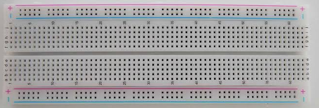
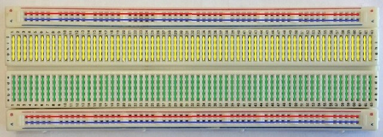
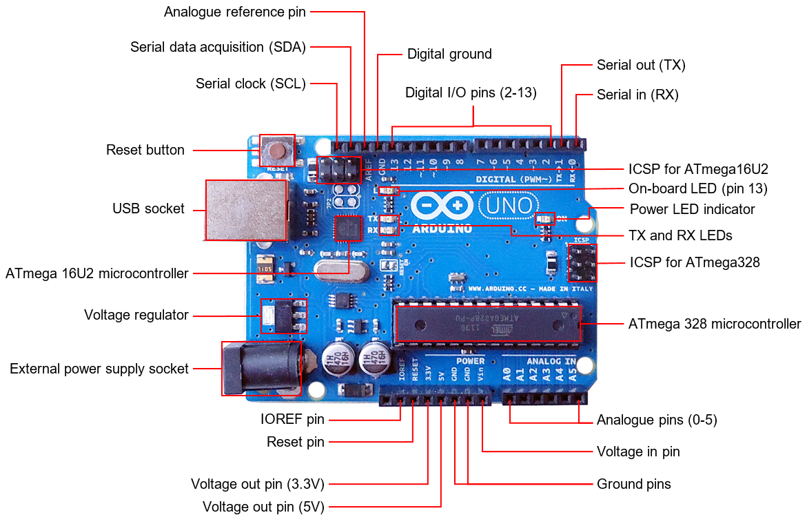
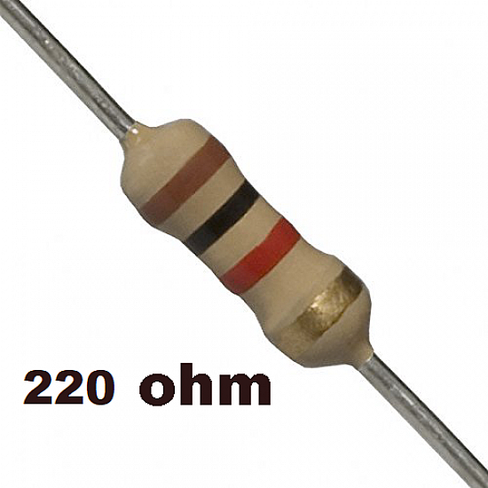
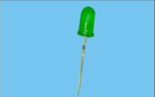

i have had this Epictac Super Starter Kit 020 for a year or two now. it has always been on my table. it has never left my sight (exaggeration).
unfortunately, i never got the right timing to do anything out of it of course. don’t get me wrong, i did give it some try. it just so happens to be that i suck at sticking to anything. i would get to blinking an LED every 500 ms and that’s where my brain would jump to the next interesting thing.
to overcome this obstacle, i’ve decided to write a series to blog posts going through everything i learn in the process. this would act as a barrier stopping me from escaping. i will try to cover as many sensors from this kit as i can. i will try to use a few more that i find online. the series might derail into fun sub-projects towards the end. only time will tell.
this is a sort of digital journal to keep track of progress and know what i’ve achieved over time.
lets first start with what i have access to. there is an Arduino Uno R3, a breadboard, loads of LEDs, wires, different ohm resistors and a bunch of weird looking sensors.
i feel like the first task for anyone tinkering with Uno is to blink an LED. easy, right? we will find out.
in order to make our Uno to blink an LED, we have to setup our software stack. i did that by installing Arduino IDE. since, i am on Linux (i use arch btw), i had to enable serial access to my personal/regular user. a quick reboot and then we are all set.
on first glance, there was a button to compile, another button to upload, a drop-down menu to select the device and a code editor. in this editor, there was a template waiting for me. ### 00.b - code logic the language is called Processing and it is fairly similar to C++ (as it is built upon it) with a custom head file for amateur programmers.
void setup() {
// put your setup code here, to run once:
}
void loop() {
// put your main code here, to run repeatedly:
}there are two sections (functions) in every logic. the setup() is run once at the beginning/start. what i’ve understood so far is that we can initialise devices or define pin types here. second is a function called loop() where the proper logic goes in. this function… you guessed it… loops till the end of time in the universe (or until our board is out of power to run).
there are some pieces of hardware that are used across all projects. i will go over some of the items and explain everything i know about them (so far)
bread board

this is called breadboard and it is backbone to connected multiple items together. this is done by looking at the layout below.

the lines are how they (all the pins) are connected. so any wire/sensor/device plugged into a pin is accessible by all the other pins in the same connection.
Arduino Uno

this is the actual circuit board that does all the thinking and working. for now (blinking an LED), all we need to know are the Digital I/O pins (2-13) that can be used to send signals and Digital ground (GND) to close the circuit.
a 220 ohm resistor

why is it 220? i’m not sure. it just is. we will learn more about it when the time comes (i hope). these help regulate the current or else the LED will explode. i found that using a more powerful resistor made the LED really dim. so i feel like maybe 220 is the sweet spot.
LED

this is an LED. it has a long sleeve and a shorter one. the shorter sleeve goes into ground (GND).
jumper wires
we all know what wires look like. they help connect pieces together.
some (most) of these terms are not accurate. i am just typing these as a mental note. i am not a electrical engineer nor have i studied Physics in years (6 years as of 2026). i don’t know (don’t remember) how electricity works and i don’t claim to be an expert on this matter.
all credits goes to me (svnu©️). i am writing this entire series and all the code without the use of any LLM. i want it to be 100% #brainmade and meaningful.
see you guys in the next chapter: 01 - blinking an LED.
laters! svnu©️ 16-June-2026 14:14
— auto-converted from markdown
sai@svnu.in:$